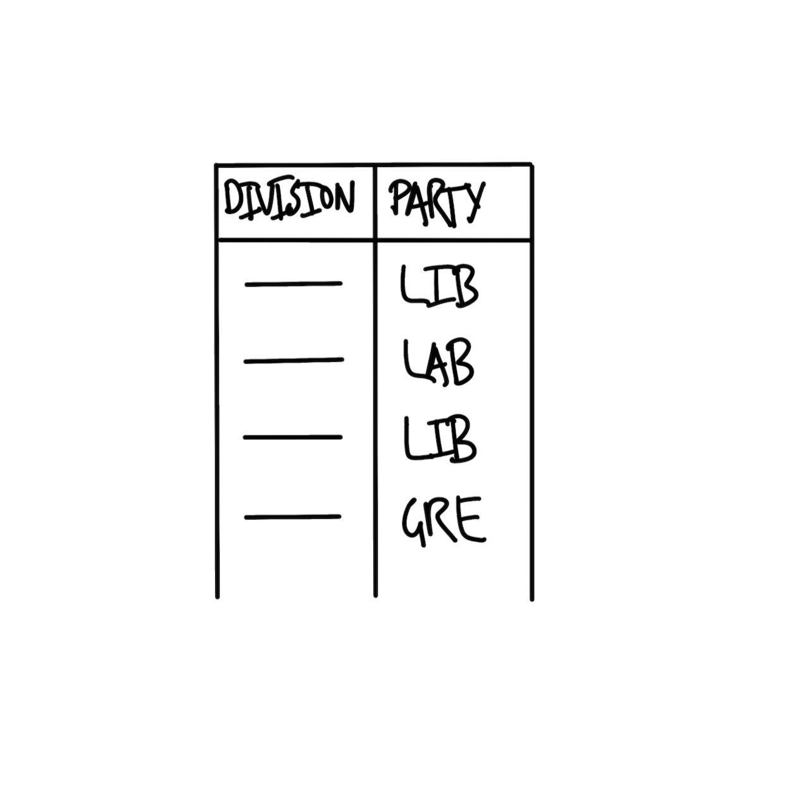

flowchart LR p[[Plan]] sim[[Simulate]] a[[Acquire]] e[[Explore/Understand]] s[[Share]] p --> sim --> a --> e --> s
Data Analysis Workflow – The Firehose
SOCI 3040 – Quantitative Research Methods
Lecture Slides
Class Notes
1 Drinking From the Firehose
1.1 the firehose
- Australian elections
- Toronto shelters
- Neonatal mortality rates (NMR)
1.2 the firehose
Whenever you’re learning a new tool, for a long time, you’re going to suck\(\dots\) But the good news is that is typical; that’s something that happens to everyone, and it’s only temporary.
Hadley Wickham as quoted by Barrett (2021)
You will be guided thoroughly here. Hopefully by experiencing the excitement of telling stories with data, you will feel empowered to stick with it.
Rohan Alexander (2023)
1.3 import libraries
library("janitor")
library("knitr")
library("lubridate")
library("opendatatoronto")
library("tidyverse")
library("here")2 Plan
Australian Elections
2.1 plan
2.1.1 Australian Elections
Australia is a parliamentary democracy
with 151 seats in the House of Representatives.
Major parties: Liberal and Labour
Minor parties: Nationals and Greens
Many smaller parties and independents
2.2 plan


3 Simulate
Australian Elections
3.1 simulate
library(tidyverse)
library(janitor)3.2 simulate
We’ll simulate a dataset with two variables,
Division and Party, and some values for each.
division
the name of one of the 131 Australian divisions
party
the name of one of the political parties
Liberal, Labor, National, Green, or Other
3.3 simulate
simulated_data <-
tibble(
# Use 1 through to 151 to represent each division
"Division" = 1:151,
# Randomly pick an option, with replacement, 151 times
"Party" = sample(
x = c("Liberal", "Labor", "National", "Green", "Other"),
size = 151,
replace = TRUE
)
)The <- symbol is an assignment operator in R. It assigns the value on the right to the variable name on the left. Here, we’re creating a new data object called simulated_data, which will store a table of simulated information.
tibble() is a function from the tidyverse package that creates a data frame, which is a type of table used to organize data. Unlike traditional data frames, tibble handles data more cleanly and is especially useful in data analysis.
Inside the tibble() function, we specify columns and the values we want in each. On Line 4, we create a column named “Division”. 1:151 generates a sequence of numbers from 1 to 151. This sequence will represent each unique division (or group) in our simulated dataset and helps to identify each row in the data.
Then we create another column in our tibble called Party. sample() is a function that randomly selects values from a specified set. Here, it’s used to pick a political party for each division, simulating party representation across divisions.
x defines the set of values that sample() will pick from. The c() function combines these five options — “Liberal”, “Labor”, “National”, “Green”, and “Other” — into a list of possible parties. In other words, each division will be randomly assigned one of these five party names, representing the political party that wins the division in our simulation. size = 151 specifies that sample() should generate 151 random selections, matching the number of divisions we created in the “Division” column.
When sampling, replace = TRUE allows each party name to be selected multiple times, as though we’re picking “with replacement” (i.e., once we sample a party name, it goes back into the bag so it can be drawn again). Without this, each party could only be chosen once, which wouldn’t match our goal of assigning a random party to each division.
We can print the simulated_data object to view the simulated dataset. When we run this line, R will display the table with two columns, Division and Party, where each division is assigned one of the five parties randomly.
3.4 simulate
ü§ò We have our fake data!
simulated_data# A tibble: 151 × 2
Division Party
<int> <chr>
1 1 Green
2 2 Labor
3 3 Liberal
4 4 National
5 5 Other
6 6 Other
7 7 Liberal
8 8 National
9 9 National
10 10 National
# ℹ 141 more rows4 Acquire
Australian Elections
4.1 acquire
The data we want is provided by the Australian Electoral Commission (AEC), which is the non-partisan agency that organizes Australian federal elections. We can download the data using this link, but we want to do it programatically, storing the results to a dataframe object called raw_elections_data.
data_url <- "https://results.aec.gov.au/27966/website/Downloads/HouseMembersElectedDownload-27966.csv"
raw_elections_data <-
read_csv(
file = data_url,
show_col_types = FALSE,
skip = 1
)4.2 acquire
We’ll save the data as a CSV file.
library(here)
write_csv(
x = raw_elections_data,
file = here("data", "australian_voting.csv")
)4.3 acquire
ü§ò We have our real data!
raw_elections_data# A tibble: 151 × 8
DivisionID DivisionNm StateAb CandidateID GivenNm Surname
<dbl> <chr> <chr> <dbl> <chr> <chr>
1 179 Adelaide SA 36973 Steve GEORGA…
2 197 Aston VIC 36704 Alan TUDGE
3 198 Ballarat VIC 36409 Cather… KING
4 103 Banks NSW 37018 David COLEMAN
5 180 Barker SA 37083 Tony PASIN
6 104 Barton NSW 36820 Linda BURNEY
7 192 Bass TAS 37134 Bridge… ARCHER
8 318 Bean ACT 36231 David SMITH
9 200 Bendigo VIC 36424 Lisa CHESTE…
10 105 Bennelong NSW 36827 Jerome LAXALE
# ℹ 141 more rows
# ℹ 2 more variables: PartyNm <chr>, PartyAb <chr>4.4 acquire
head() shows the first six rows.
head(raw_elections_data)# A tibble: 6 × 8
DivisionID DivisionNm StateAb CandidateID GivenNm Surname
<dbl> <chr> <chr> <dbl> <chr> <chr>
1 179 Adelaide SA 36973 Steve GEORGA…
2 197 Aston VIC 36704 Alan TUDGE
3 198 Ballarat VIC 36409 Catheri… KING
4 103 Banks NSW 37018 David COLEMAN
5 180 Barker SA 37083 Tony PASIN
6 104 Barton NSW 36820 Linda BURNEY
# ℹ 2 more variables: PartyNm <chr>, PartyAb <chr>4.5 acquire
tail() shows the last six rows.
tail(raw_elections_data)# A tibble: 6 × 8
DivisionID DivisionNm StateAb CandidateID GivenNm Surname
<dbl> <chr> <chr> <dbl> <chr> <chr>
1 152 Wentworth NSW 37451 Allegra SPENDER
2 153 Werriwa NSW 36810 Anne Ma… STANLEY
3 150 Whitlam NSW 36811 Stephen JONES
4 178 Wide Bay QLD 37506 Llew O'BRIEN
5 234 Wills VIC 36452 Peter KHALIL
6 316 Wright QLD 37500 Scott BUCHHO…
# ℹ 2 more variables: PartyNm <chr>, PartyAb <chr>4.6 acquire
“We are trying to make it similar to the dataset that we thought we wanted in the planning stage. While it is fine to move away from the plan, this needs to be a deliberate, reasoned decision.” (Alexander 2023)
Let’s clean.
aus_voting_data <- here("data", "australian_voting.csv")
raw_elections_data <-
read_csv(
file = aus_voting_data,
show_col_types = FALSE
)4.7 acquire
clean_names() makes variables easier to type.
cleaned_elections_data <- clean_names(raw_elections_data)
Let’s look at the first 6 rows.
head(cleaned_elections_data)# A tibble: 6 × 8
division_id division_nm state_ab candidate_id given_nm
<dbl> <chr> <chr> <dbl> <chr>
1 179 Adelaide SA 36973 Steve
2 197 Aston VIC 36704 Alan
3 198 Ballarat VIC 36409 Catherine
4 103 Banks NSW 37018 David
5 180 Barker SA 37083 Tony
6 104 Barton NSW 36820 Linda
# ℹ 3 more variables: surname <chr>, party_nm <chr>,
# party_ab <chr>4.8 acquire
We are primarily interested in two variables:
division_nm (division name)party_nm (party name)
cleaned_elections_data <-
cleaned_elections_data |>
select(
division_nm,
party_nm
)4.9 acquire
head(cleaned_elections_data)# A tibble: 6 × 2
division_nm party_nm
<chr> <chr>
1 Adelaide Australian Labor Party
2 Aston Liberal
3 Ballarat Australian Labor Party
4 Banks Liberal
5 Barker Liberal
6 Barton Australian Labor PartyThis looks good, but some of the variable names are still not obvious because they are abbreviated.
4.10 acquire
names(cleaned_elections_data)[1] "division_nm" "party_nm" Let’s rename.
4.11 acquire
cleaned_elections_data <-
cleaned_elections_data |>
rename(
division = division_nm,
elected_party = party_nm
)
head(cleaned_elections_data)# A tibble: 6 × 2
division elected_party
<chr> <chr>
1 Adelaide Australian Labor Party
2 Aston Liberal
3 Ballarat Australian Labor Party
4 Banks Liberal
5 Barker Liberal
6 Barton Australian Labor Party4.12 acquire
What are the unique values in elected_party?
cleaned_elections_data$elected_party |>
unique()[1] "Australian Labor Party"
[2] "Liberal"
[3] "Liberal National Party of Queensland"
[4] "The Greens"
[5] "The Nationals"
[6] "Independent"
[7] "Katter's Australian Party (KAP)"
[8] "Centre Alliance" Cool, but let’s simplify the party names in elected_party to match what we simulated. We can do this with case_match() from dplyr.
4.13 acquire
cleaned_elections_data <-
cleaned_elections_data |>
mutate(
elected_party =
case_match(
elected_party,
"Australian Labor Party" ~ "Labor",
"Liberal National Party of Queensland" ~ "Liberal",
"Liberal" ~ "Liberal",
"The Nationals" ~ "Nationals",
"The Greens" ~ "Greens",
"Independent" ~ "Other",
"Katter's Australian Party (KAP)" ~ "Other",
"Centre Alliance" ~ "Other"
)
)4.14 acquire
head(cleaned_elections_data)# A tibble: 6 × 2
division elected_party
<chr> <chr>
1 Adelaide Labor
2 Aston Liberal
3 Ballarat Labor
4 Banks Liberal
5 Barker Liberal
6 Barton Labor Our data now matches our plan! üòé
4.15 acquire
Let’s save the cleaned data so that we can start with it data in the next stage. We’ll use a new filename to preserve the original and make it easy to identify the clean version.
aus_elections_clean_path <- here("data", "cleaned_elections_data.csv")
write_csv(
x = cleaned_elections_data,
file = aus_elections_clean_path
)5 Explore / Understand
Australian Elections
5.1 explore / understand
How do we build the graph that we planned?
5.2 explore / understand
First, we read in the cleaned dataset that we just created.
cleaned_elections_data <-
read_csv(
file = aus_elections_clean_path,
show_col_types = FALSE
)5.3 explore / understand
head(cleaned_elections_data)# A tibble: 6 × 2
division elected_party
<chr> <chr>
1 Adelaide Labor
2 Aston Liberal
3 Ballarat Labor
4 Banks Liberal
5 Barker Liberal
6 Barton Labor üòé
5.4 explore / understand
We can get a quick count with count() from dplyr.
cleaned_elections_data |>
count(elected_party)# A tibble: 5 × 2
elected_party n
<chr> <int>
1 Greens 4
2 Labor 77
3 Liberal 48
4 Nationals 10
5 Other 125.5 explore / understand
, allowing the viewer to interpret the values and relationships in the dataset visually. By mapping data to these properties, we can layer information on the same plot and enhance the viewer’s understanding of patterns, trends, and differences.
In ggplot2, aesthetics are specified within the aes() function, where each aesthetic is mapped to a data variable. For instance, x and y represent positions on the axes, while color, fill, size, and shape control other visual aspects. By carefully selecting aesthetics, we can add depth to the plot without clutter, guiding the viewer’s eye to the most important parts.
5.6 explore / understand
Let’s visualize the counts as vertical bars using geom_bar() from ggplot2.
ggplot(
cleaned_elections_data, # specify the data
aes(x = elected_party) # specify aesthetics
) + # add a layer with the + operator
geom_bar() # specify a geometric shape (bar)But it’s cleaner to use the pipe operator |>.
cleaned_elections_data |>
ggplot(aes(x = elected_party)) +
geom_bar()
5.7 explore / understand
cleaned_elections_data |>
ggplot(aes(x = elected_party)) +
geom_bar() +
theme_minimal() + # Improve the theme
labs(x = "Party", y = "Number of seats") # Improve the labels
5.8
cleaned_elections_data |>
ggplot(aes(x = elected_party)) +
geom_bar()
cleaned_elections_data |>
ggplot(aes(x = elected_party)) +
geom_bar() +
theme_minimal() +
labs(x = "Party", y = "Number of seats")References
Alexander, Rohan. 2023. Telling Stories with Data: With Applications in R. Chapman; Hall/CRC.
Barrett, Malcolm. 2021. Data Science as an Atomic Habit. https://malco.io/articles/2021-01-04-data-science-as-an-atomic-habit.
Bronner, Laura. 2020. “Why Statistics Don’t Capture the Full Extent of the Systemic Bias in Policing.” FiveThirtyEight, June. https://fivethirtyeight.com/features/why-statistics-dont-capture-the-full-extent-of-the-systemic-bias-in-policing/.
Cardoso, Tom. 2020. “Bias behind bars: A Globe investigation finds a prison system stacked against Black and Indigenous inmates.” The Globe and Mail, October. https://www.theglobeandmail.com/canada/article-investigation-racial-bias-in-canadian-prison-risk-assessments/.
Firke, Sam. 2023. janitor: Simple Tools for Examining and Cleaning Dirty Data. https://CRAN.R-project.org/package=janitor.
R Core Team. 2023. R: A Language and Environment for Statistical Computing. Vienna, Austria: R Foundation for Statistical Computing. https://www.R-project.org/.
Wickham, Hadley, Mara Averick, Jenny Bryan, Winston Chang, Lucy D’Agostino McGowan, Romain François, Garrett Grolemund, et al. 2019. “Welcome to the Tidyverse.” Journal of Open Source Software 4 (43): 1686. https://doi.org/10.21105/joss.01686.